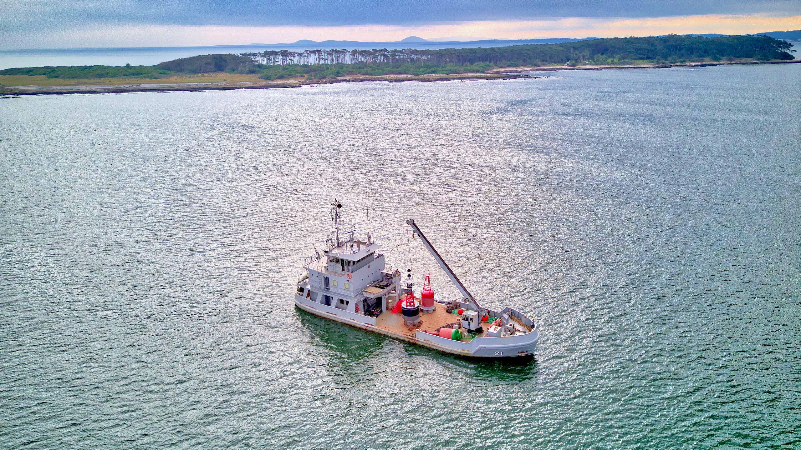

ROU 21 Sirius: 37 años del balizador de la Armada Uruguaya
12 de mayo de 2026
El ROU 21 "Sirius" es el único buque balizador de la Armada Nacional del Uruguay. Desde su abanderamiento el 12 de mayo de 1989 mantiene las ~300 señales náuticas de ríos y costas uruguayas. Hoy cumple 37 años de servicio ininterrumpido.
Índice

ROU 21 Sirius, 2019 — Foto: Marcelo Campi / CC BY-SA 2.0
Historia y ficha técnica
El Sirius con su grúa electrohidráulica de proa, pieza central para el izado de boyas
| Número de casco | ROU 21 | Tipo | Buque balizador (buoy tender) |
| Botadura | 5 de febrero de 1988 | Abanderamiento | 12 de mayo de 1989 |
| Eslora | 35 m | Manga | 10 m |
| Desplazamiento | ~150 t | Propulsión | Doble hélice (twin-screw) |
| Constructor | SCRA — Servicio de Construcciones, Reparaciones y Armamento de la Armada, Dique Nacional, Montevideo | ||
| Diseño | Damen Shipyards (Países Bajos) | ||
El Sirius fue construido íntegramente en el Dique Nacional de Montevideo por el SCRA, un hito para la industria naval uruguaya: diseño europeo, mano de obra 100% nacional. Damen Shipyards transfirió los planos y proveyó el kit de componentes especializados, incluyendo la grúa de cubierta electrohidráulica de proa — pieza central para el izado y despliegue de boyas en mar abierto.
Pasaron 15 meses entre la botadura del casco (febrero 1988) y el abanderamiento (mayo 1989), período en que se completaron instalación de sistemas, pruebas de mar y entrega formal a la Armada. Desde entonces opera sin interrupción como único balizador de la flota — 37 años que incluyen campañas en el Río Uruguay, ejercicios multinacionales y el mantenimiento rutinario de cientos de señales náuticas a lo largo de toda la costa.
Misión: el balizamiento
El Sirius es la plataforma operativa del SERBA (Servicio de Iluminación y Balizamiento). Mantiene unas 300 señales náuticas en siete departamentos costeros:
- Recambio de balizas luminosas y boyas de canal
- Verificación de fondeos y cadenas de anclaje
- Reposición de balizas afectadas por colisiones o deriva
- Instalación de señales en canales nuevos
- Abastecimiento logístico al faro de la Isla de Lobos
Áreas habituales: Canal de Acceso a Montevideo, Bahía de Maldonado, desembocaduras del Santa Lucía y del Rosario, Canal Norte del Río de la Plata, y el Río Uruguay en coordinación con la Armada Argentina.
Algunos hitos operacionales
Campaña del Río Uruguay (2017–2018)
Balizamiento del Canal Casa Blanca y tres etapas sucesivas: 72 boyas posicionadas, 2.000 mn navegadas en 30 días efectivos, en coordinación con la Armada Argentina (sector bonaerense).
Boya oceanográfica del SOHMA (2024)
El Sirius desplegó la primera boya oceanográfica del SOHMA para medición meteoceánica (oleaje, temperatura, corrientes). La boya transmite por AIS (Mensaje 21, AtoN).
Mantenimiento rutinario
Campaña anual de febrero–marzo: en 2022–2023 se revisaron más de 80 señales en una sola campaña abarcando los siete departamentos costeros.
ACRUX XII — 2026
El Ejercicio Combinado ACRUX es la serie bienal de maniobras fluviales de las armadas de Argentina, Brasil, Uruguay, Paraguay y Bolivia en la Hidrovía Paraguay-Paraná. Para ACRUX XII, el Parlamento autorizó la salida del ROU 11 "Río Negro" y el ROU 21 "Sirius" hasta el 20 de mayo de 2026. La fase operativa fue del 16 al 26 de abril en el Complejo Naval de Ladário (Corumbá, Brasil): 700 efectivos y 18 unidades de cinco países.
El ROU 21 Sirius cumple hoy su 37° aniversario navegando de regreso desde Brasil, con llegada autorizada hasta el 20 de mayo.
AIS: datos técnicos
El Sirius porta un transponder AIS activo, capturado por el receptor costero de este proyecto.
| Campo | Valor |
|---|---|
| MMSI | 770576022 |
| IMO | 8604046 |
| Nombre AIS | SIRIUS |
| Indicativo (callsign) | CWBO |
| Tipo de buque (ShipType) | 35 — Military ops |
| Clase de transponder | Clase B |
| Total de paquetes capturados | 649 (543 posición + 106 estáticos) |
Clase B, no Clase A
El Sirius usa transponder Clase B — estándar para buques no obligados por SOLAS que transmiten voluntariamente. Diferencias prácticas respecto a la Clase A mercante:
| Campo | Clase A (mercante) | Clase B (Sirius) |
|---|---|---|
| Mensaje de posición | Tipo 1 / 2 / 3 | Tipo 18 |
| Mensaje estático | Tipo 5 (nombre + IMO + destino + calado) | Tipo 24 Part A + B (nombre + callsign + tipo) |
| Intervalo en tránsito | 2–10 s | 30 s |
| Nav Status | Sí (fondeo, maniobra restringida, etc.) | No transmite |
| ROT / True Heading | Sí | No / 511 (N/A) |
| IMO / Destino / ETA | Sí | No |
Mensajes AIS capturados
Mensaje 18 — Position Report Clase B
Ejemplo: 26 de febrero de 2026, tránsito a plena velocidad rumbo al Canal de Punta Indio.
RAW !AIVDM,1,1,,A,B;Np>UP0Gg00QUK0EtLgkwRVoP06,0*0E ── Mensaje 18 decodificado ───────────────────────────── Message Type 18 Standard Class B CS Position Report MMSI 770576022 MID 770 = Uruguay SOG 9.4 kn Longitude -55.916889° Latitude -34.915081° COG 76.4° True Heading 511 Sin sensor de rumbo (valor N/A) Nav Status — No disponible en Clase B Timestamp UTC 2026-02-26 18:05:06
Ejemplo: 17 de diciembre de 2025, Sirius detenido cerca del Canal de Acceso a Montevideo.
RAW !AIVDM,1,1,,,B;Np>UP00>wiMqs0ERpjwwR6oP06,0*14 ── Mensaje 18 decodificado ───────────────────────────── Message Type 18 MMSI 770576022 SOG 0.0 kn Detenido Longitude -56.122475° Latitude -34.915764° COG 81.5° COG errático a SOG=0: sin significado real True Heading 511 Timestamp UTC 2025-12-17 17:52:03
Mensaje 24 — Class B Static Data (Part A y Part B)
Emitido en dos tramas NMEA independientes, vinculadas por MMSI:
PART A !AIVDM,1,1,,B,H;Np>UQ<U8UE<00000000000000,2*2D ── Parte A ───────────────────────────────────────────── Message Type 24 MMSI 770576022 Part Number 0 Part A Vessel Name SIRIUS PART B !AIVDM,1,1,,B,H;Np>UTS00000003G2?000404190,0*75 ── Parte B ───────────────────────────────────────────── Message Type 24 MMSI 770576022 Part Number 1 Part B Ship Type 35 Military ops Call Sign CWBO IMO — No incluido en Clase B
El IMO 8604046 existe en el registro Lloyd's pero el buque no lo emite por radio — esperable en Clase B, donde el estándar no contempla ese campo en Msg 24.
Sesiones capturadas
El receptor capturó al Sirius en cuatro sesiones entre diciembre de 2025 y marzo de 2026:
| Fecha | Paquetes | SOG rango / media | Zona aprox. | Perfil |
|---|---|---|---|---|
| 2025-12-17 | 239 | 0–9.8 kn / 6.3 kn | -34.94°, -56.11° | Operaciones + tránsito |
| 2026-02-10 | 167 | 0–9.3 kn / 4.0 kn | -34.95°, -56.15° | Operaciones |
| 2026-02-26 | 134 | 9.1–10.5 kn / 9.9 kn | -34.94°, -56.06° | Tránsito hacia el este |
| 2026-03-26 | 3 | 1.0–6.2 kn / 3.0 kn | -34.98°, -56.13° | Captura parcial |
Posición representativa por sesión AIS capturada · Puerto de Montevideo marcado como referencia fija
El Sirius no transmite Nav Status — no hay campo explícito de "maniobra restringida". El indicador Clase B equivalente: SOG < 2 kn + COG incoherente + posición que apenas deriva. En tránsito, los paquetes se espacian ~30 s; brechas en múltiplos de 30 s indican paquetes no recibidos por el receptor, no cambios de cadencia del transponder.
El ROU 25 Orión
En 2011 se completó el ROU 25 "Orión", catamarán balizador construido localmente y presentado como el sucesor del Sirius.
Durante las pruebas de mar se detectaron defectos mayores de construcción que comprometían la estabilidad estructural. El costo de reparación superó el valor de un buque nuevo. El Orión nunca entró en servicio.
El episodio dejó a la Armada con el Sirius como única opción operativa. En 2014, el Plan de Necesidades 2014–2030 reconoció que la flota operaba "con tecnología de los años 60–70". En 2019 la Armada llamó a concurso internacional para un nuevo balizador. Al cierre de este artículo, el Sirius sigue siendo el único operativo.
Videos
Balizador ROU 21 Sirius en el puerto de Rosario — 9 de septiembre de 2019
ROU 21 Sirius — Servicio de Balizamiento de la Armada Nacional
Fuentes
| Fuente | Contenido |
|---|---|
| Armada Nacional — 33° Aniversario ROU 21 | Fechas oficiales de botadura y abanderamiento |
| Wikipedia — Sirius (ROU 21) | Características técnicas, historial de servicio |
| SOHMA — Campañas Río Uruguay | Etapas de balizamiento 2017–2018, cifras de boyas y millas |
| Cámara de Representantes — Autorización ACRUX XII | Decreto parlamentario autorizando la salida del ROU 21 a Brasil |
| Zona Militar — Finalización ACRUX XII | 700 efectivos, 18 unidades, Complejo Naval de Ladário |
| InfoDefensa — Plan de Necesidades 2014–2030 | Declaraciones sobre estado de la flota y necesidad de dos balizadores |
| InfoDefensa — Concurso nuevo balizador | Convocatoria internacional para reemplazar al ROU 25 Orión |
| USCG — AIS Class B Reports | Especificación técnica de mensajes Clase B (Msg 18 y 24) según ITU-R M.1371 |